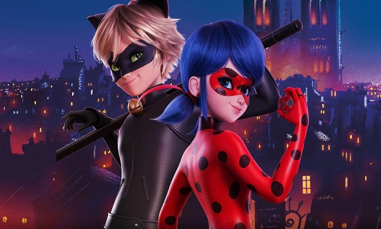
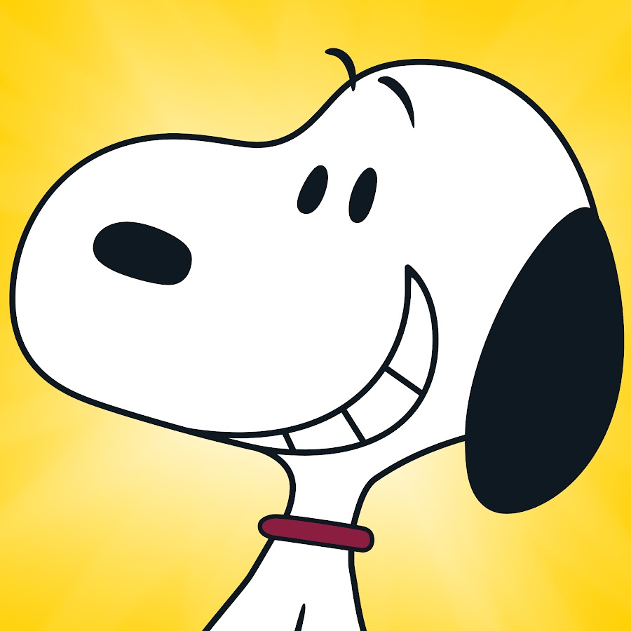
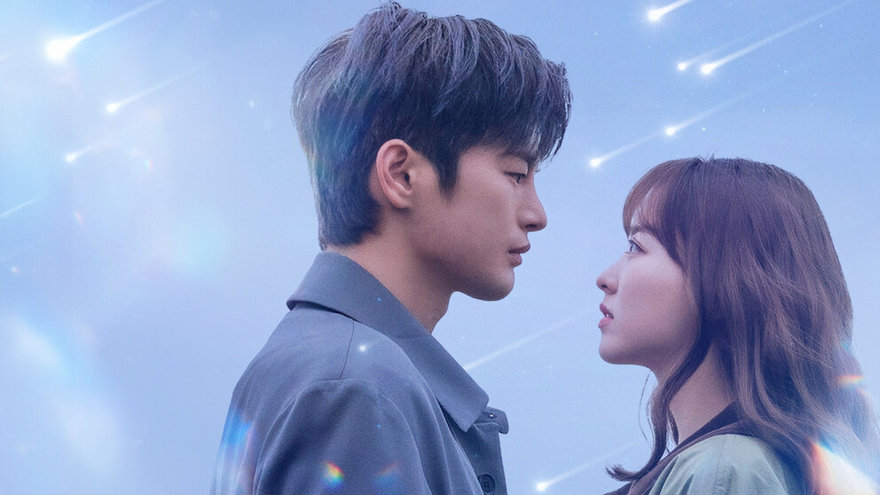
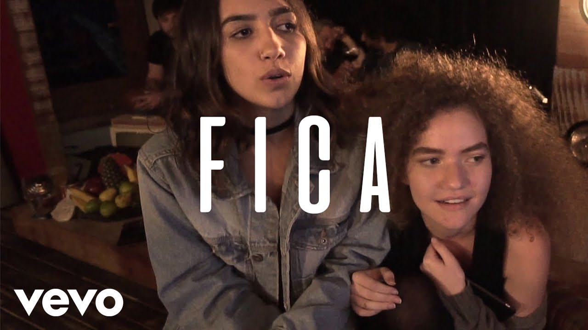
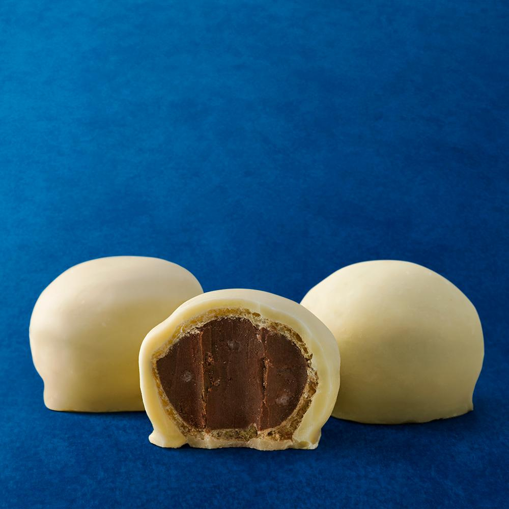
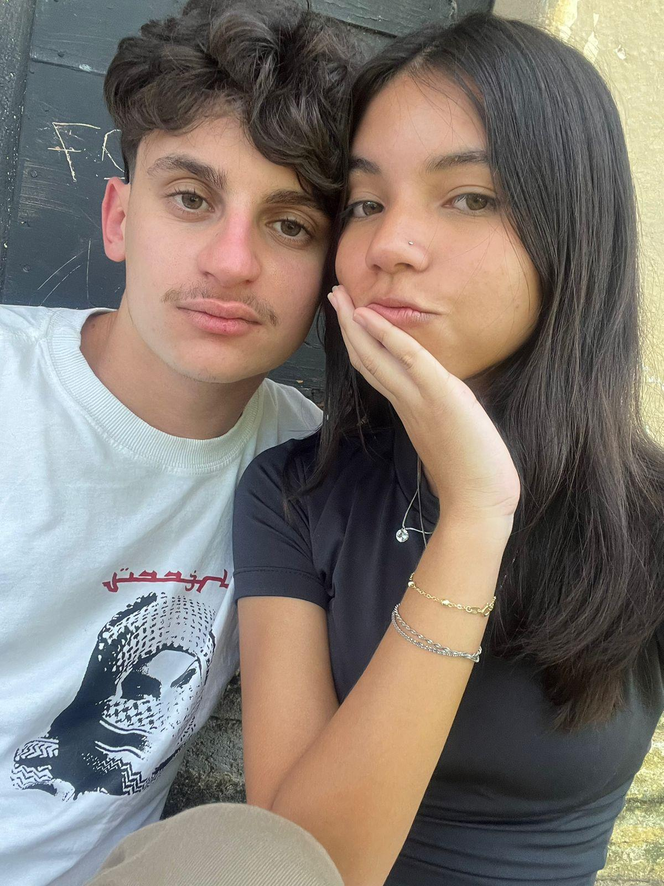
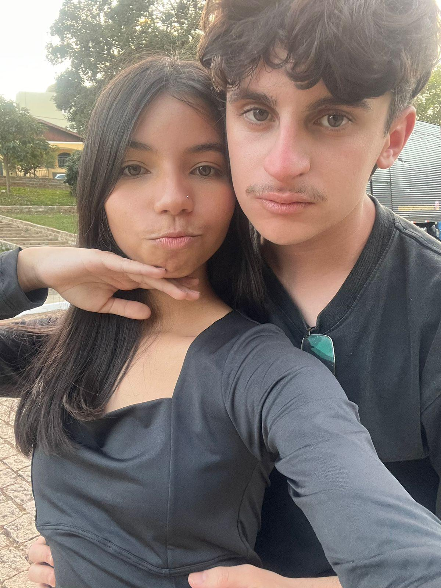

Po, hoje eu falei besteira. Saiu tudo errado e pareceu que eu tava te chamando de mentirosa — e definitivamente não é isso que eu penso de você. Você é a última pessoa nesse mundo que eu duvidaria, E eu te juro isso.
Que bom que você continuou aqui. Montei essa página com tudo que você curte, só pra te mostrar o quanto você importa pra mim — e o quanto eu me sinto mal por ter te feito passar por isso hoje.

Às vezes eu viro tipo um akumatizado e falo merda sem pensar direito. Mas o coração continua sendo todo seu. A Ladybug e o Cat Noir são a melhor dupla que existe, e a gente também é assim — mesmo quando aparece um vilão bobo (no caso, minha boca sem filtro) tentando estragar tudo.
Vou usar meu talismã com mais cuidado daqui pra frente, prometo.

Simplesmente o personagem q me lembra vc, só de falar nele ja vem vc na minha cabeça, e eu com certeza sou o periquito amarelo q fica em volta dele e vc o snoopy.
sem falar q ele é nosso filho. O Snoopys
Se um dia o mundo virasse um apocalipse igual em The Walking Dead, eu não ia ligar pro caos lá fora. A única coisa que eu ia querer era ter você do meu lado. Porque, no fim das contas, são as pessoas que a gente ama que fazem tudo valer a pena.
E, se pra te ver bem eu tivesse que enfrentar uma horda inteira de walkers, eu ia. Sem pensar duas vezes. 🤍
Sabe a do Lil Peep que fala do céu cheio de estrela, que cada uma tem um motivo pra brilhar? Ela fica passando na minha cabeça toda hora que eu penso na gente.
Porque, sem enrolação: o meu maior motivo pra tudo — pra levantar de manhã, pra tentar ser alguém melhor — é você.

Tô com muita vontade de assistir esse dorama com você. Tenho certeza que você vai se emocionar até nas cenas mais bobinhas kkkkk, e eu já consigo imaginar você comentando tudo enquanto a gente assiste. Acho que esse vai ser um dos momentos que eu mais vou gostar de viver com você.
Bora ver hoje à noite? E prometo que dessa vez não vou falar besteira igual ontem. 🤍

Literalmente a musica que adotamos como nossa. Toda vez que ela tocar, eu quero lembrar de você e de tudo que a gente ainda vai viver junto.
Eu te amo e quero ficar para sempre meu amor.

Confesso que já pensei em aparecer aí com uma caixa inteira de Ouro Branco só pra te fazer sorrir de novo kkkkk. Ainda tá de pé, é só me falar.
Você merecia um docinho desses toda vez que o dia pesasse — e principalmente hoje. 🤍
Quando as coisas desandam e eu me sinto quebrado, é a sua voz e o seu jeito de amar que me trazem de volta pro chão. Você é muito mais que perfeita pra mim, mesmo nos dias em que eu não mereço.


Não preciso de dorama, super-herói ou música nenhuma pra provar o que eu sinto. Só preciso de você, do jeito real — igual nessas fotos.
Não tem espaço pra dúvida aqui. Meu amor por você é inteiro, e depois de hoje meu único objetivo é fazer você se sentir a mulher mais amada e mais segura do mundo do meu lado.
É o que eu mais admiro em você. Você é a pessoa mais verdadeira que eu já conheci na vida — e foi exatamente isso que eu esqueci de respeitar hoje.
Você ilumina tudo ao seu redor, tipo uma heroína salvando o dia de um clima cinzento.
Você aguenta qualquer apocalipse, mas continua com o coração mais doce que eu já vi.
Nosso recomeço, com muito mais diálogo e cuidado com as palavras.
Mais risadas e momentos bobos, tipo Snoopy & Woodstock.
Enfrentando qualquer desafio juntos, lado a lado.
Pra sempre, do seu lado. Não sei fazer desculpa perfeita, só sei que quero você comigo — e vou prestar mais atenção nas palavras, pra nunca mais te fazer sentir do jeito que você sentiu hoje.
feito com carinho (e um pouco de arrependimento) só pra você